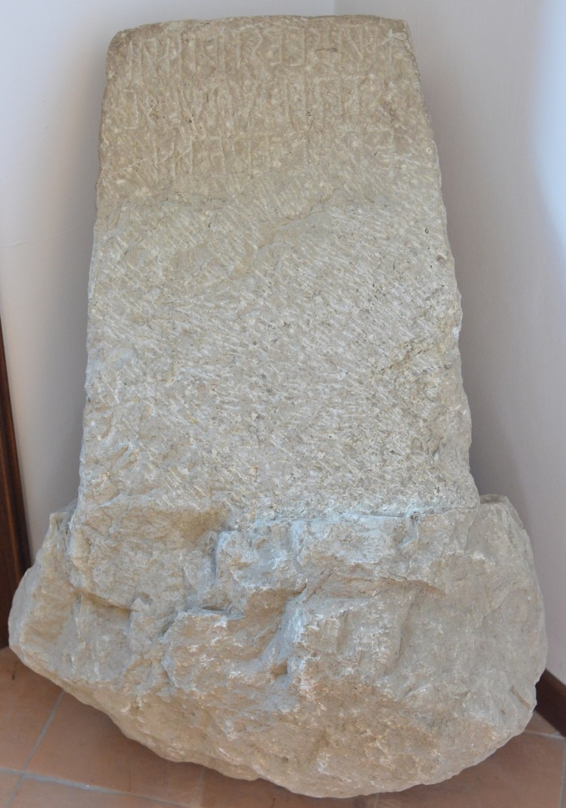

Home |
Le federazioni osche |
Localizzazione musei e siti |
Chi siamo |
Dove trovarci |
Nel Museo Archeologico Immersivo di Avella, dotato di allestimento tecnologico per la rappresentazione delle varie fasi storiche della città, sono custodite le epigrafi osche rinvenute in situ durante gli scavi del 1984 e del 2013.
|
Iscrizione osca da Avella (II Secolo a.C.) |
Cippo di fondazione da Avella (II-I Secolo a.C.) |
|
Museo Immersivo Archeologico |